지난 글을 올리고 이틀이 지났습니다. 커밋 메시지를 다시 읽어보니 "진짜 대격변할거임 스켈레톤", "대격변 2" 같은 것들이 줄줄이 남아 있네요. 보통 저런 문구를 적는 날은 십중팔구 뭔가 크게 부수는 날입니다. 이번엔 캐릭터의 뼈대였습니다. 그동안 NPC마다 리깅 출신이 제각각이라, 골반 아래 다리가 엉뚱한 곳에 매달려 있거나 어깨 웨이트가 몸통까지 번져 있는 개체들이 섞여 있었거든요. 평소엔 티가 안 나다가 랙돌이 켜지는 순간에 몸이 접히면 안 되는 방향으로 접힙니다. 그래서 보스와 블로커의 몸을 통째로 다시 뽑고, 어깨·골반 바인딩을 원본 체형 기준으로 다시 잡았습니다. 중간에 첨부한 것 같은 참사도 여러 번 있었습니다. 얼굴이 폭발한 그 컷 말이죠.
이번 이틀의 가장 큰 수확은 넘어진 캐릭터가 스스로 일어나는 것입니다. 애니메이션을 재생하는 게 아니라, 랙돌이 켜진 상태 그대로 물리로 일어납니다. 엎드림 → 손 짚기 → 한쪽 무릎 당기기 → 발 딛기 → 골반 올리기 → 직립. 단계마다 "시간이 지나서" 넘어가는 게 아니라, 실제로 손이 바닥에 닿았는지 무릎 접촉점이 어디인지를 보고 넘어갑니다. 막히면 최대 네 번까지 반대 방향으로 다시 굴러서 팔다리를 풉니다. 헤드리스로 랜덤한 방향의 낙하 74번을 돌려서 전부 일어나고 5초간 서 있는 것까지 확인했습니다. 물론 아직 손이 순간적으로 초속 20m로 튀거나 발이 바닥에 6cm쯤 박히는 프레임이 남아 있어서, "성공률 100%"라는 숫자를 그대로 믿으면 안 되는 상태입니다. 그래도 쓰러진 놈이 꾸물꾸물 몸을 일으키는 걸 처음 봤을 때는 좀 소름이 돋았습니다.
그리고 도시를 구역으로 쪼갰습니다. 지상 도시와 지하철역을 한 씬에 다 들고 있으니 당연히 버거워서, 계단을 오르내릴 때 필요한 쪽만 읽고 반대쪽은 놓아주도록 바꿨습니다. 계단 왕복 측정에서 프레임이 26ms에서 17ms로, 지하로 내려가면 GPU 메모리 120MB가 회수됩니다. 도로도 위성사진 위에 선을 긋는 방식으로 다시 깔고, 그 도로망을 그대로 신호등과 보행자 경로로 씁니다. 차가 초록불에 지나가고 사람이 그 다음에 건너는, 그 당연한 풍경을 만드는 데 생각보다 손이 많이 가더군요.
조명은 요즘 제일 재미있게 파고 있는 부분입니다. Blender의 Cycles로 간접광만 구워서 Godot에 다시 얹는 경로를 만들었습니다. 아래 지하철역 두 장이 같은 장면인데, 하나는 텍스처를 전부 벗기고 구워진 빛만 남긴 것입니다. 붉은 천장이 바닥까지 은은하게 물드는 그 느낌, 저는 이게 부산 지하철의 8할이라고 생각합니다.
- 랙돌 물리 기상 컴포넌트 신규 구현 및 낙하 74조건 검증 - 캐릭터 스켈레톤·바인딩 정리, 보스/블로커 외형 ARP 재수출, 리그 상속 검사 애드온 추가 - CITY·METRO 구역 스트리밍과 충돌 오프라인 베이크, 계단 왕복 성능 검증 - Cycles 커스텀 GI 베이크 경로와 텍스처 UV 도구 추가 - 도로 스케치 기반 신호·보행 경로, 군중/차량 처리 변경 - 최고 난이도 협공 전투 정책 연결, 지하철 실전 전투 자동 검증 추가
마지막으로, 오늘의 커밋 제목은 "아마도 스트리밍 때문에 전투 렉이 아주 심하다" 입니다. 결론부터 말하면 스트리밍은 범인이 아니었습니다. 언젠가 옵션 창에서 만져놓고 잊어버린 물리 틱 143Hz가 설정 파일에 저장돼 있었고, 그게 매 실행마다 조용히 복원되고 있었습니다. 렌더 한 프레임마다 물리가 여덟 번씩 돌고 있었던 셈이죠. 60Hz로 내리니 30ms가 11ms가 됐습니다. 덤으로, 다섯 시간 전에 띄워놓고 잊은 헤드리스 테스트 프로세스가 코어 두 개를 먹으며 아직도 돌아가고 있는 것도 발견했습니다. 성능이 이상하면 코드를 의심하기 전에 내 책상부터 치워야 한다는 걸 또 배웠습니다. 그럼 다음에 또...
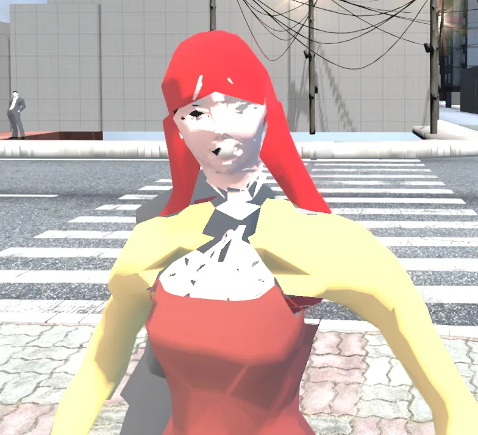
리그를 갈아엎는 도중. 이런 걸 수십 번 봤습니다.
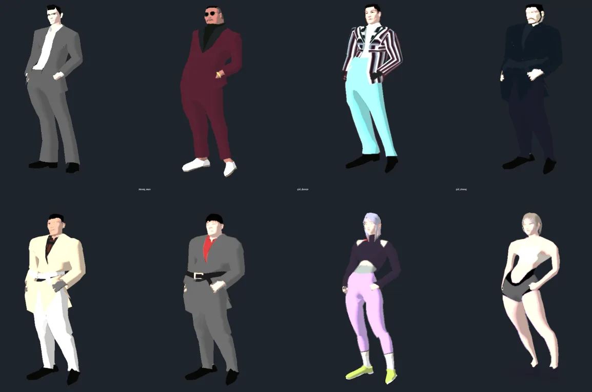
정리를 마친 NPC들. 이제 뼈대가 전부 같습니다.
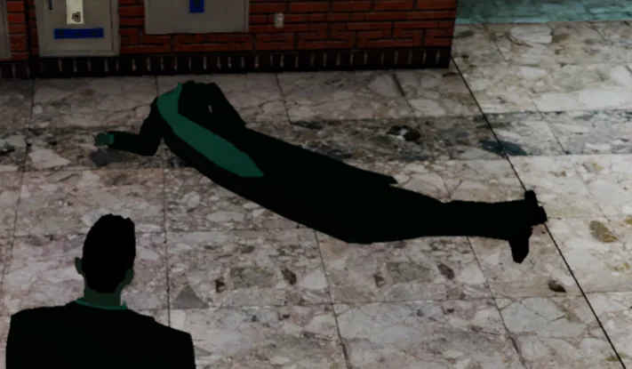
여기서 다시 일어납니다. 애니메이션이 아니라 물리로.
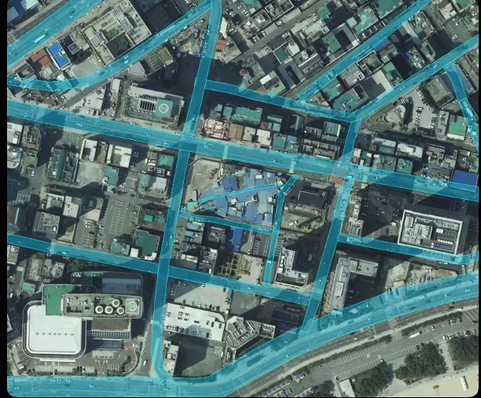
도로는 위성사진 위에 선을 긋는 것으로 시작합니다.
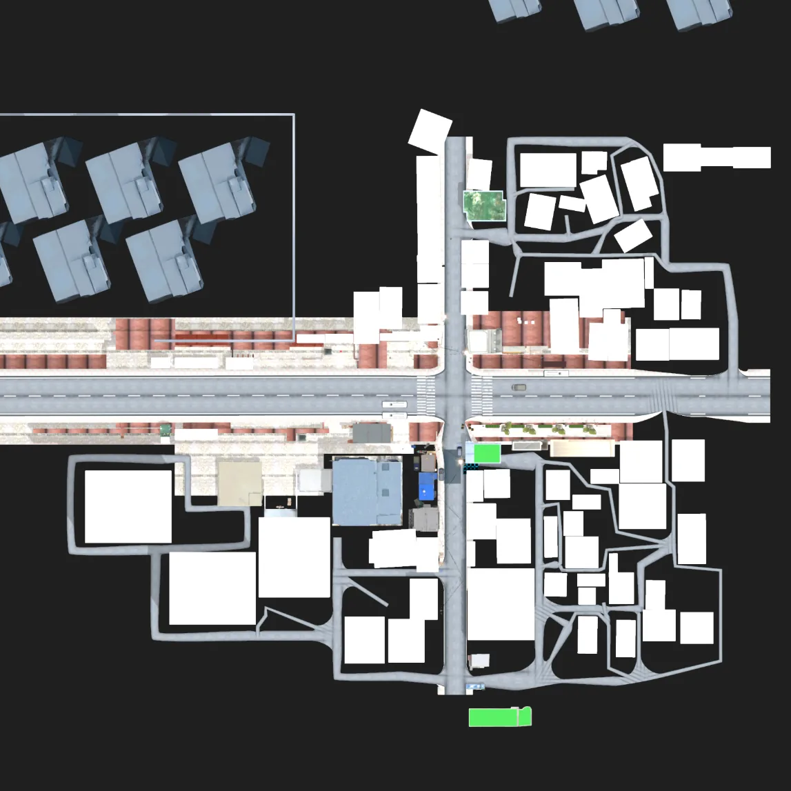
위에서 본 도시. 이걸 구역으로 쪼개 필요한 곳만 읽습니다.
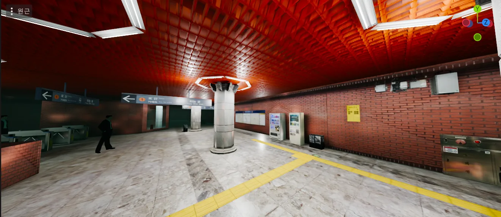
간접광을 구운 지하철역.
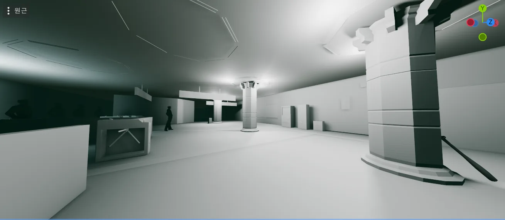
같은 장면에서 텍스처를 전부 벗긴 것. 빛만 남았습니다.
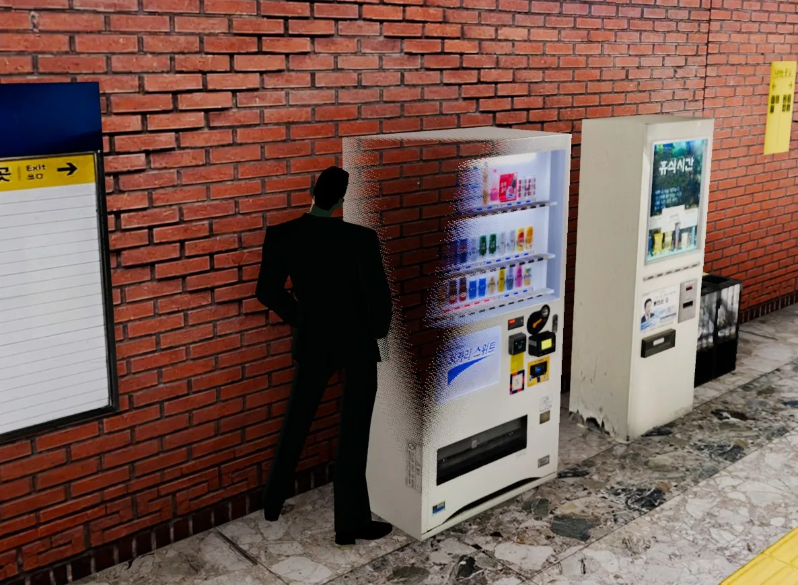
결국 만들고 싶은 건 이런 장면입니다.
GPT 아스트라 등장, 1인 인디게임 개발의 혁명
부산 토박이 우당탕탕 액션 갈매기를 개발한 지 어언 반년이 되었습니다. 초여름에 권유를 받아 바이브코딩을 시작했는데, 사실 활용이 어려웠던 것이 사실입니다. 초심자일수록 통제 가능한 범위가 좁고, ai가 쓴 코드는 아예 구조조차 파악하기 힘들었기 때문입니다. 때문에 개발속도가 오히려 꺾이기도 하고, 완전히 멘붕해버려 아트 작업에만 몰두하기도 했습니다. 거기에 서서히 익숙해질 무렵 아스트라를 사용할 수 있게 되었네요. 사실 예상했던 것보다 훨씬 탁월한 능력을, 초심자에게도 완전히 컨트롤할 수 있도록 도와주는 것 같습니다. 개인적으로 1인 개발하면서 가장 괴로웠던 부분은 툴을 만드는 것이었는데요. 플러그인, 애드온부터 시작해 맵이나 시퀀스를 자동화하고 파이프라인을 꾸리는 것에 데이터를 추적해 관리하거나, 코드로 그런 '지도'를 쌓아가는 것이 너무도 버겁게 느껴졌습니다. 하지만.. 추론 능력이 뛰어난 ai는 확실히 다르네요. 애드온을 전전하며 맘에 드는 효과를 내기가 불가능에 가까워 보였던 도로 자동화 툴이나, 전투를 반복 학습시켜서 적 ai를 업데이트하는 기능 등 그야말로 글로 적기만 하면 5분만에 새로운 툴을 만들어 주니 개발에 탄력이 붙습니다. 모델링도 확실한 개선이 느껴집니다. 특히 기존 meshyai나 huanyuan 같은 툴에서 속이 꽉 찬 (..) 50만 버텍스 모델을 들고 멘붕해보신 분들이라면, 아스트라가 얼마나 게임 친화적인 로우 폴리 모델을 뽑는지 체감하실 수 있다고 생각합니다. 이런. 말투가 왠지 약파는 사람처럼 되버렸네요. 존댓말로 쓰니 왠지 더 어색한 문장이 이어집니다. 어디선가 본 말투같달까요(웃음) 어쨋든, ai 칼럼니스트가 아니고 게임 만들려고 용쓰는 입장이니, 작업 내용을 남깁니다.
- 전투·NPC·도플갱어 정책과 전투 테스트 환경 추가 및 변경 - 불·연기·비·수면 VFX와 관련 재질·셰이더 변경, 검증 도구 추가 - 카메라·애니메이션·군중 처리 및 관련 검증 코드 변경 - 레벨·환경 에셋 변경과 도로 편집 애드온 추가 - 프로젝트 구조 문서와 관련 작업 문서 갱신
역시나 문제는 재미 요소인데요. 이 게임의 재미는 물론 액션으로 뒷바침되어야겠지만, 반복적인 전투를 수행하는 비뎀업으로 그 탄력을 계속 이어나가는 것은 제 역량으론 무리라고 생각됩니다. 대신 스스로 잘할 수 있다고 생각되는 분위기, 장소의 현장감을 연구하고 있습니다. 모션, 색감, 환경음, 이런 감각적인 요소들 말이죠. 그런 것들을 특출나게 잘하는 게임들이 가끔 보이는데, 개인적으로 그런 대리체험 혹은 몰입 가능한 세계로서, 게임을 가장 즐기는 것 같습니다. 글이 너무 길어졌네요. 그럼 다음에 또...
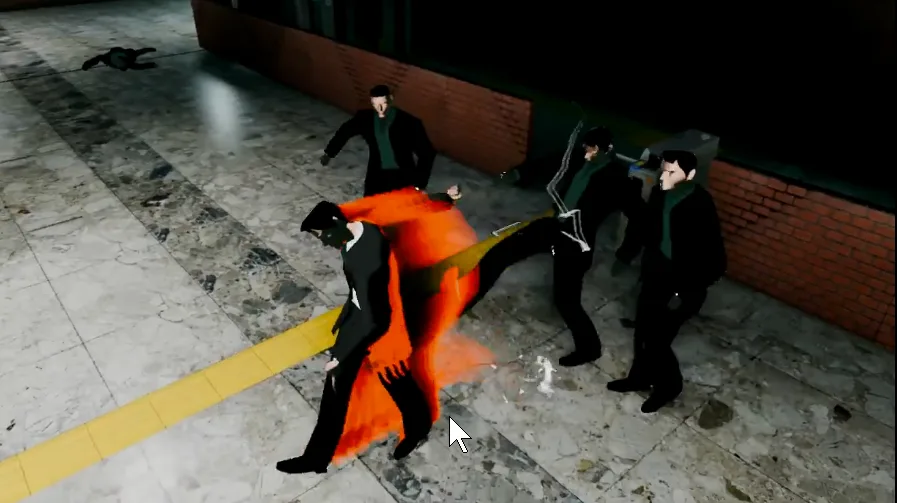
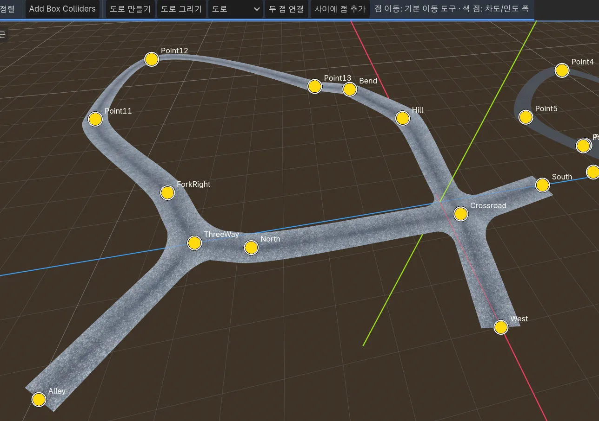
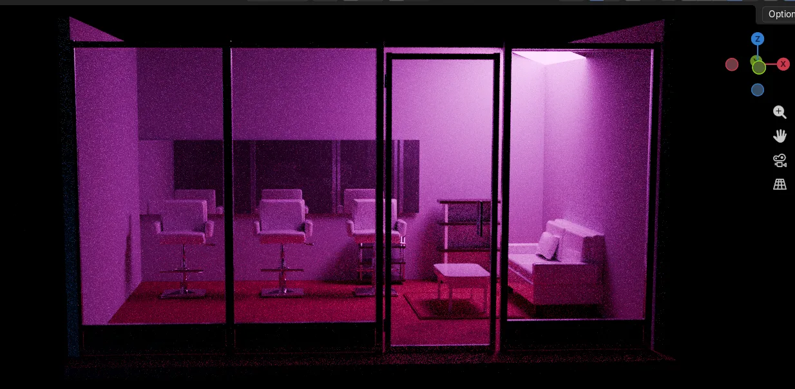
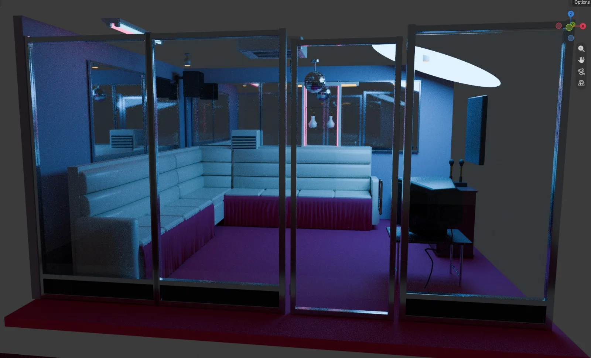
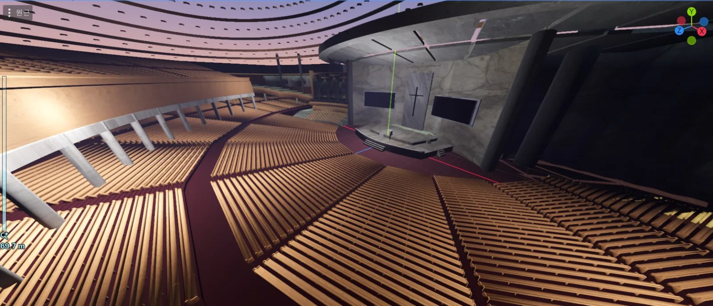
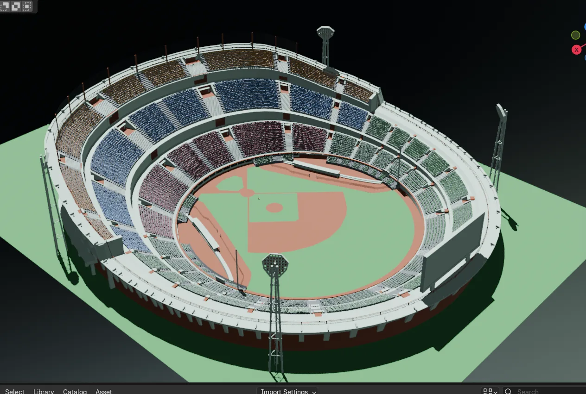
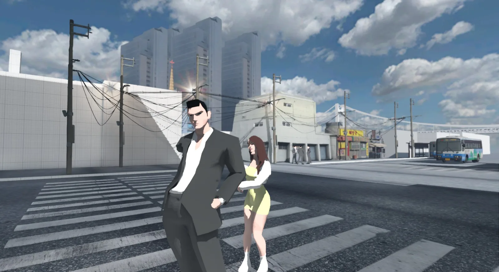
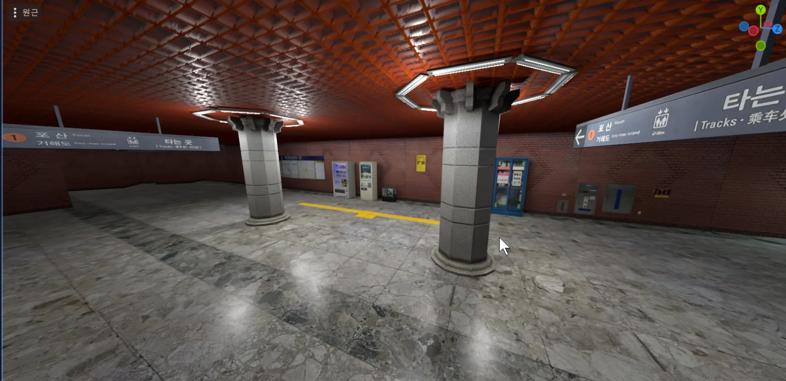
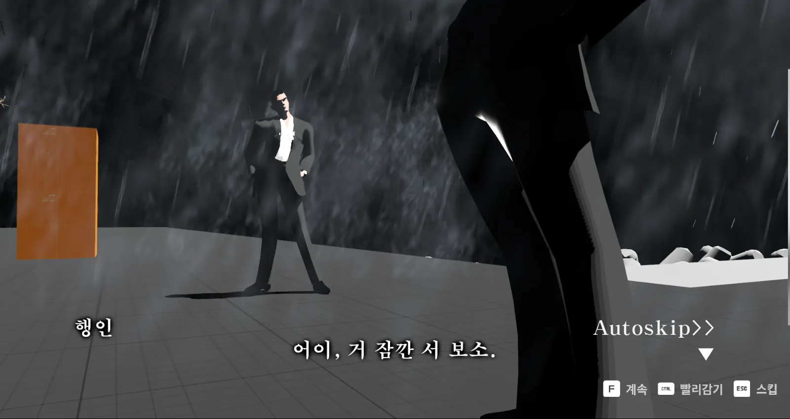
혼자 서는 법부터 다시
사이트를 열어놓고 열흘 동안 글을 안 썼습니다. 변명을 하자면 8월 하순은 통째로 몸뚱아리에 매달려 있었습니다. 먼저 던지기와 벽꽝, 이즈나 드롭을 넣었습니다. 상대를 붙잡아 머리부터 바닥에 꽂는 그 기술 말입니다. 유리 파편도 같이 만들었습니다. 사람이 유리창을 뚫고 나가야 하니까요. 그 다음은 파쿠르와 클라이밍입니다. 턱을 짚고 올라가고, 벽을 타고, 3단 대시로 내달리는 것까지. 도시가 넓어지니 결국 이동이 재미없으면 아무것도 재미없더군요.
그러다 이족보행 로봇에 빠졌습니다. 커밋 로그를 보면 8월 30일 하루에만 열두 번을 찍었는데, 제목이 "예쁘게 자빠짐", "4초 정도 버티는듯", "모르겠다 나도" 순서입니다. 사람 몸에 관절 모터를 달아서 스스로 균형을 잡게 하는 실험이었는데, 결론부터 말하면 60Hz 물리로는 원리상 못 섭니다. 발바닥이 땅을 딛는 판정이 그보다 빠르게 일어나거든요. 대신 그 과정에서 얻은 착지점 규칙은 캐릭터 다리 IK로 넘어갔습니다. 맞고 넘어지는 것만큼은 확실히 좋아졌습니다.
지하철역도 짓기 시작했습니다. 부산 지하철 특유의 그 주황색 격자 천장, 저건 실제 지오메트리가 아니라 패럴랙스 재질입니다. 평평한 판때기에 깊이를 속여 넣은 거죠. 그리고 군중. 수천 명을 한 번에 세워보고 프레임을 재봤습니다. 사람이 많아야 도시 같아 보이는데, 사람이 많으면 프레임이 죽습니다. 이 싸움은 아마 끝까지 갈 것 같습니다.
- 가오 시스템 밸런싱과 결투 진입, 던지기·벽꽝·유리 파편 - 이즈나 드롭, 파쿠르·클라이밍·3단 대시, 다리 IK와 무릎 보정 - 액티브 랙돌 도입, 이족보행 균형 실험(실패, 규칙만 이식) - 지하철역 블록아웃, 인파 셰이더 베이크, 군중 부하 측정 - 가라오케·고시원 인테리어 맵, 카메라 게이트, 블렌더 뷰포트 애드온
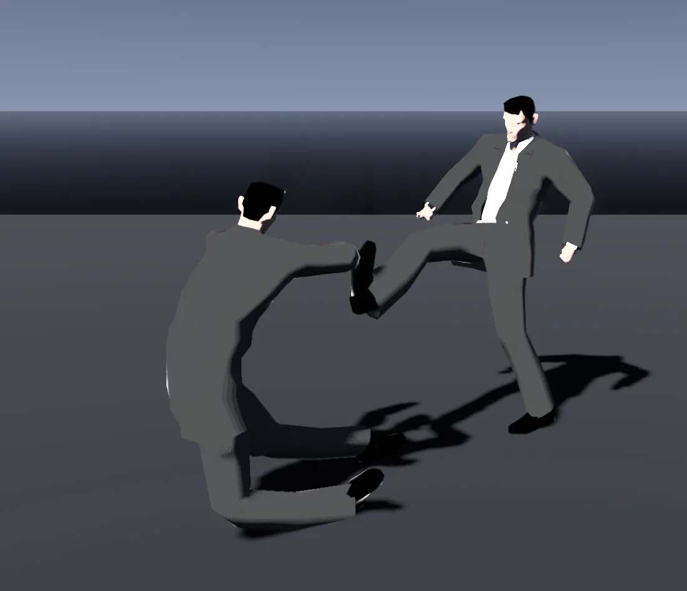
액티브 랙돌. 맞는 쪽만큼은 확실히 좋아졌습니다.
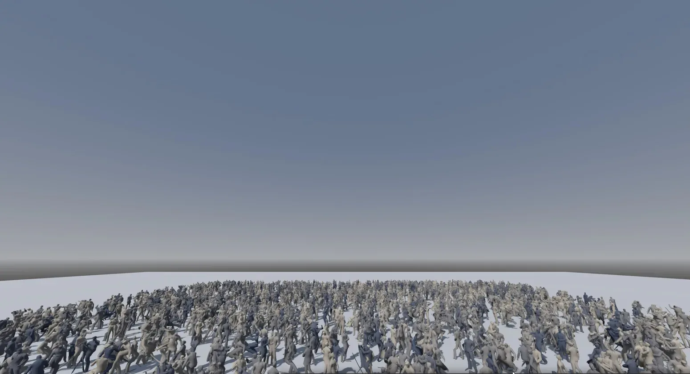
사람이 많아야 도시 같은데, 사람이 많으면 프레임이 죽습니다.
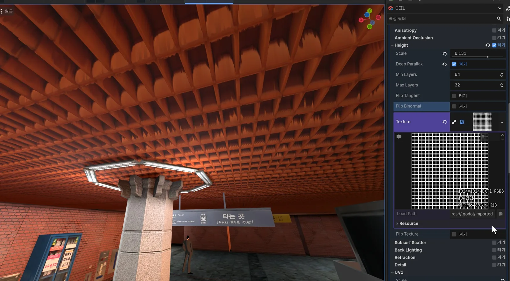
주황색 격자 천장은 진짜 요철이 아니라 속임수입니다.
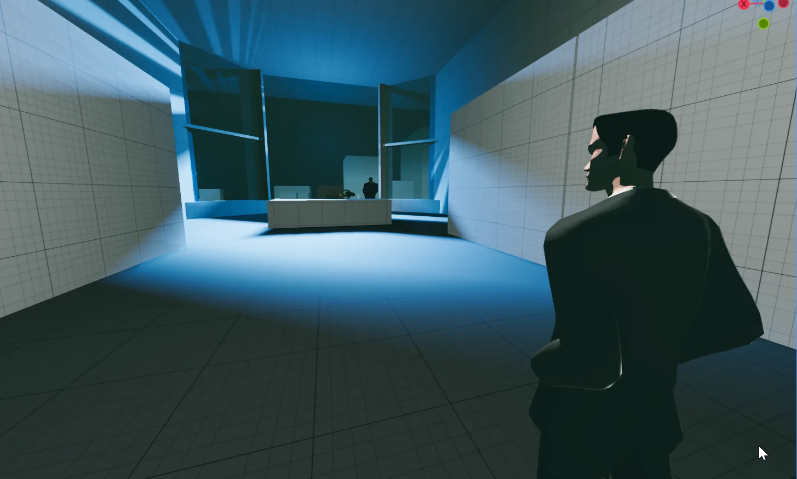
이런 빛을 만들고 싶어서 계속 파는 중입니다.
갈메기 사이트 개설
인디 게임 개발을 시작한 지도 벌써 1년여가 되었습니다. 애지중지 길러오던 [한국형 누아르 액션 갈메기]도 슬슬 게임같은 모양새가 되어가고 있기 때문에!! 재미있는 일들도 많이 생기고 남기고 싶은 일들도 많습니다. 매일의 작업에 의미를 더하고 또 루틴으로 잘 보관해보고자, 독립된 사이트를 개설하여 운영하고자 합니다. 아직 열심히 개발중이기 때문에 내용도 두서없고 아마 실없는 내용이 대다수일거라고 예상합니다만, 그럼에도 함께 즐겨주시면 더할 나위 없이 기쁠 것입니다. 그럼 잘 부탁드립니다.
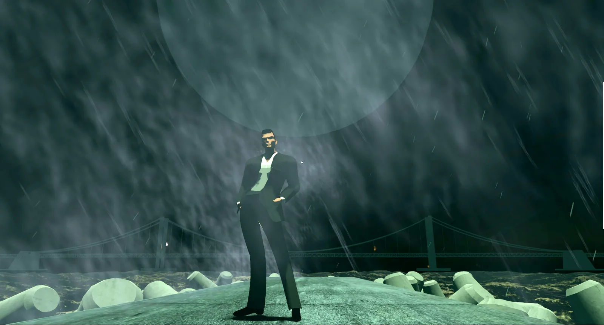
게임에 이름이 생겼습니다
8월 초에 잠깐 팀으로 굴러본 적이 있습니다. 혼자 쥐고 있던 프로젝트를 남에게 열어주는 게 이렇게 정신없는 일인 줄 몰랐네요. 가장 먼저 한 일은 이름을 붙이는 것이었습니다. 제목을 Sam in Busan으로 바꾸고, 타이틀 아트를 부팅 화면에 걸었습니다. 주인공에게 이름이 생기니까 갑자기 게임 같아 보이더군요. 웹으로 돌아가게 만드는 것도 이때입니다. 브라우저에서 클릭 한 번에 열리는 데모가 있어야 남한테 보여줄 수 있으니까요.
그런데 이 웹 빌드가 사람 잡습니다. 처음 뽑은 패키지가 1.4GB였습니다. 게임이 아니라 영화 파일이죠. 텍스처 해상도를 깎고, 이미지를 무손실 압축하고, 안 쓰는 에셋을 걷어내고, 미리 gzip으로 눌러서 678MB까지 내렸습니다. 그래도 큽니다. 하지만 일단 열리기는 하더군요. 로딩 화면에는 스토리와 조작법을 넣었습니다. 어차피 기다려야 하니까 읽을거리라도 있어야죠.
이 시기에 만든 것 중 개인적으로 제일 마음에 든 건 Y2K 감자 필터입니다. 화면을 일부러 저해상도로 뭉개서 2000년대 초 게임처럼 보이게 하는 건데요. 아래 세 번째 사진이 그겁니다. 이거 켜놓고 한참 놀았습니다. 물론 결국 기본값으로는 안 썼습니다만.
- 게임 제목 변경, 타이틀 아트와 부팅 스플래시, 스테이지 선택과 로딩 화면 - 웹 익스포트 지원과 패키지 다이어트(1.4GB → 678MB), S3/CloudFront 배포 - 해변 보스전, 동료 시스템, 목격자 AI(적대 행위를 본 NPC의 반응) - 사운드 이펙트 라이브러리, 애니메이션 LOD, 입력 캐싱 - 해변 엔딩 내레이션과 오토 세이브, 시퀀스 연출
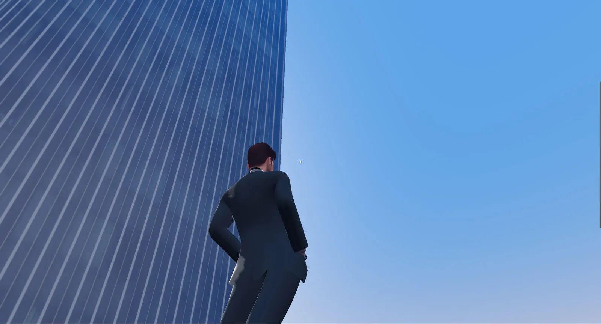
이름이 생긴 남자.
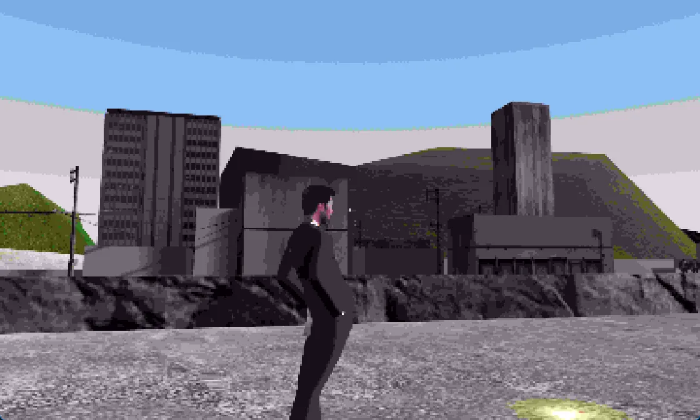
Y2K 감자 필터. 실용성은 없지만 즐거웠습니다.
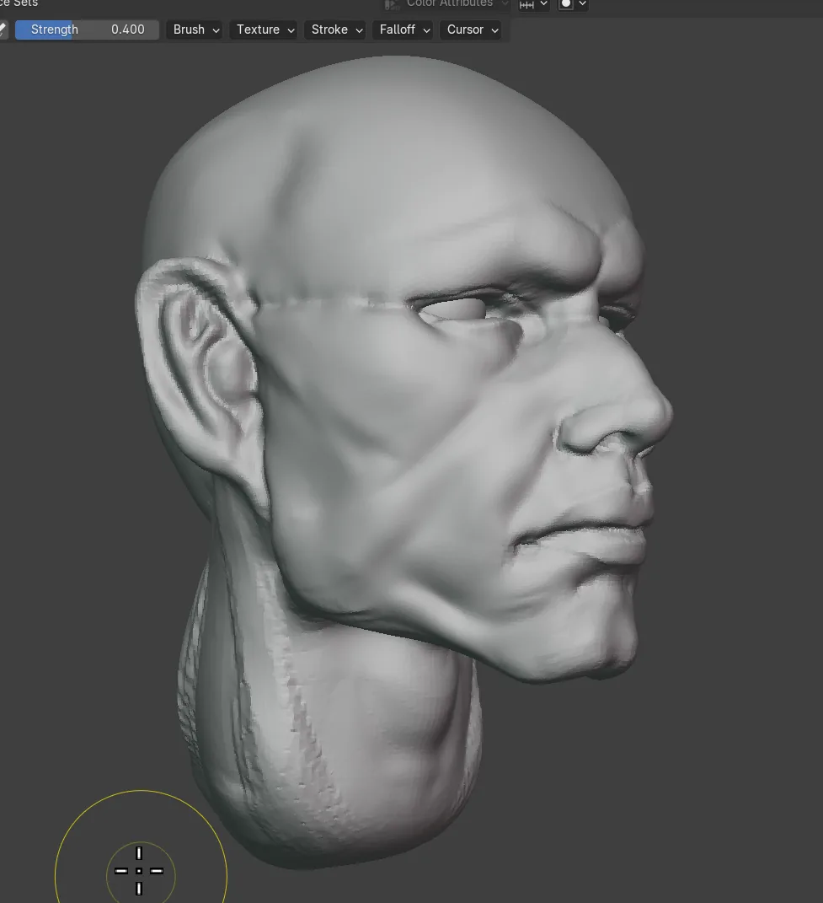
얼굴은 여전히 손으로 팝니다.
비 만드는 데 일주일을 썼습니다
7월 말부터 계속 물과 씨름했습니다. 시작은 침수였습니다. 물이 차오르고 사람이 빠지는 것. 그 다음이 파도, 그 다음이 비, 그 다음이 폭풍우입니다. 비는 만만하게 봤다가 크게 당했습니다. 떨어지는 물방울을 그리는 건 반나절이면 되는데, 그게 바닥에 튀는 순간부터 지옥이 열립니다. 튀는 위치가 전부 똑같으면 프린트한 무늬처럼 보이고, 완전히 무작위면 이번엔 비 같지가 않습니다. 커밋 제목이 "비 튀는 위치 다양화" 하나로 남아 있는데, 저 여덟 글자 뒤에 하루가 들어 있습니다.
셰이더는 여전히 강의 영상을 띄워놓고 따라 치면서 배웁니다. 이론을 제대로 배운 적이 없어서, 원하는 그림이 나올 때까지 노브를 돌려보는 식입니다. 비효율적이지만 이 방식의 좋은 점이 하나 있는데, 우연히 예쁜 걸 발견한다는 겁니다.
도구도 몇 개 만들었습니다. 전깃줄을 자동으로 늘어뜨리는 애드온, 에셋을 지면에 맞춰 뿌리는 배치기, 그리고 깨진 리소스 참조를 되살리는 리솔버. 특히 마지막 건 만들다가 한 번 불가역적으로 말아먹어서 백업부터 뜨고 다시 만들었습니다. 커밋 제목이 "불가역적 일단백업"인데, 이때의 심정이 그대로 남아 있네요.
- 침수와 파도, 파도 마스크 굽기, 잠수 - 비 파티클과 폭풍우, 튀는 위치 다양화, 화면 빗방울 - 에셋 플레이서·전깃줄 자동화·리소스 리솔버 애드온 - 경계 AI(들키면 경보), 정찰 시야, 시체 끌고 다니기, 불 붙이기 - 연기·그림자·터레인 정리, 배경음과 환경음
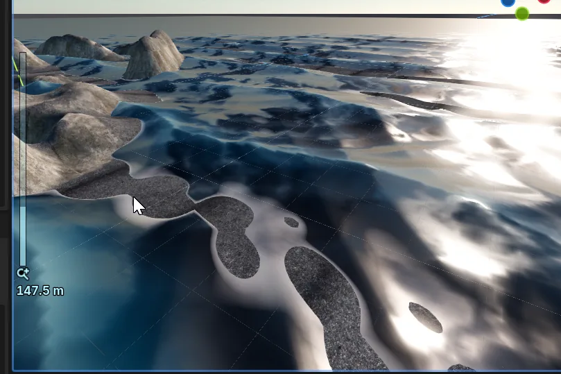
파도. 여기까지 오는 데 며칠이 걸렸습니다.
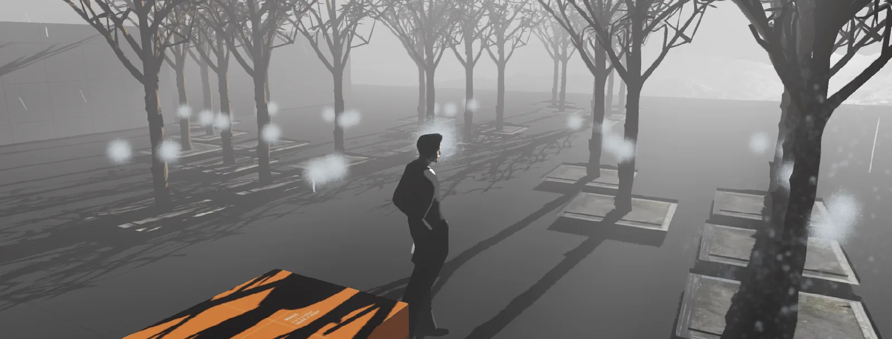
비와 안개. 이 그림 하나 보려고 일주일을 썼습니다.
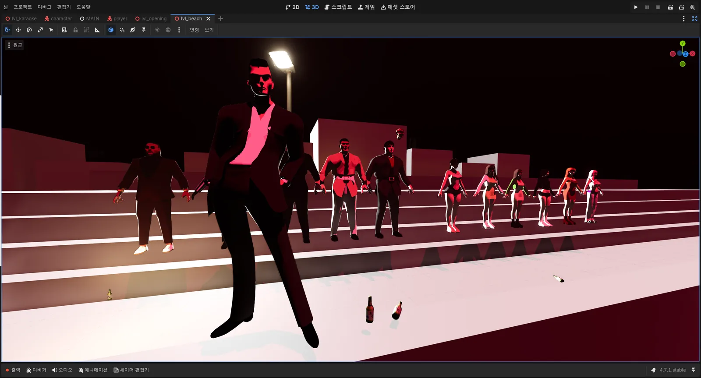
밤 해변. 색으로 분위기를 잡는 연습.
게임보다 편집기를 더 많이 만들었습니다
6월 말에 클로드를 붙잡았습니다. 그리고 7월 내내 만든 것을 세어보니, 게임이 아니라 도구입니다. 대사 편집기, 시퀀스 편집기, NPC별 대화 편집기, 세이브 시스템. 처음엔 이게 시간 낭비 같았습니다. 플레이어에게 보이지도 않는 것들이니까요. 그런데 컷신 하나를 손으로 짜는 데 두 시간 걸리던 게 십 분이 되니까 생각이 바뀌더군요. 1인 개발에서 제일 비싼 자원은 결국 저 자신이라, 저를 덜 쓰게 만드는 게 전부입니다.
아트 쪽은 부산 거리를 채우는 소품을 계속 모았습니다. 가게 셔터, 어린이보호 표지판이 붙은 스테인리스 난간, 그런 것들요. 이런 건 사올 수가 없습니다. 한국 거리에만 있는 물건이라서요. 직접 찍고, 직접 다듬어서 넣습니다. 이 게임의 절반은 이 지겨운 작업으로 만들어져 있다고 봐도 됩니다.
동료 시스템도 이때 들어갔습니다. NPC 하나가 따라다니게 만드는 건 쉬운데, 그게 바보처럼 안 보이게 만드는 게 어렵습니다. 문턱에 끼거나, 절벽으로 걸어가거나, 제 등에 붙어서 밀어대거나. 아직도 완전히 해결하지 못했습니다.
- 대사·시퀀스·NPC 대화 편집기, 세이브 시스템 - 바다와 수영, 앉기 액션, 물건 던지기, 상호작용·록온 개선 - 동료(얼라이) 추종과 뭉침 제어 - 부산 거리 소품 모델링, 캐릭터 얼굴 리토폴로지 - 플레이어 전용 조명, 스트레스 테스트, 테스트 파일 정리
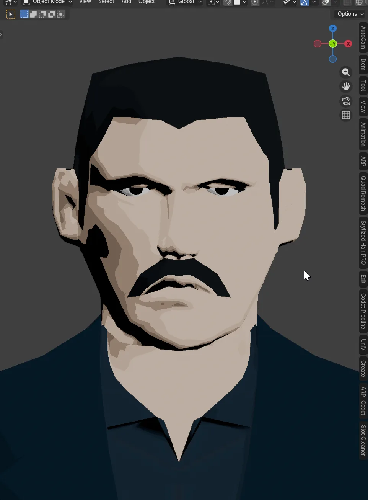
면을 최대한 줄이면서 인상은 남기기.
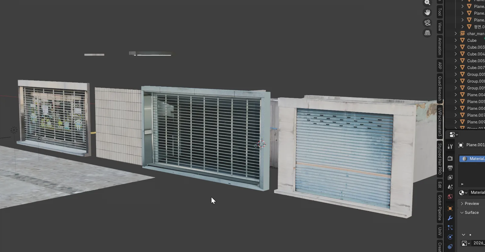
가게 셔터. 이런 건 어디서도 사올 수 없습니다.
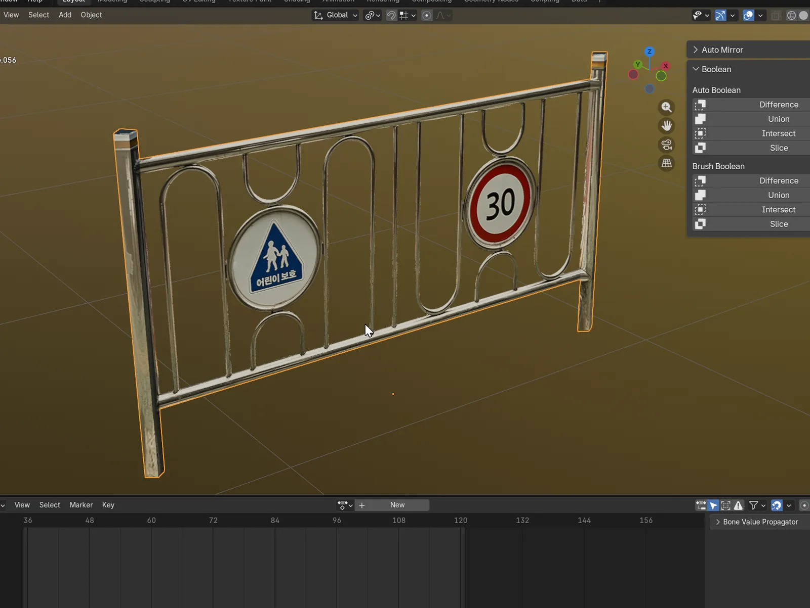
이 난간을 보고 부산이라고 느끼면 성공입니다.
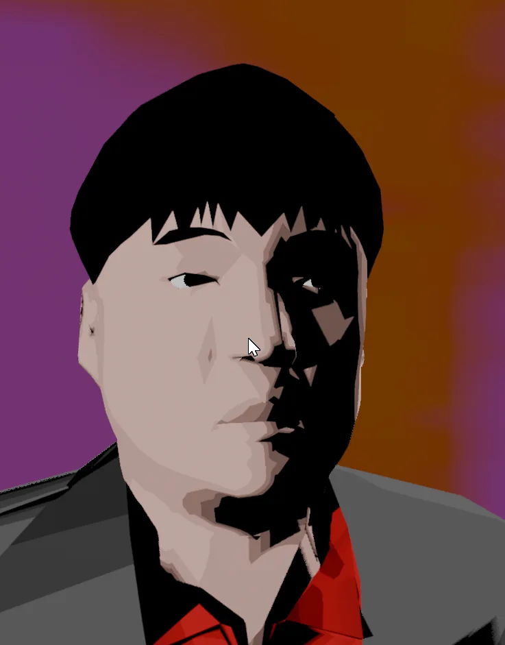
조명 하나로 인물이 달라 보입니다.
AI에게 맡겼다가 애니메이션 트리를 잃었습니다
6월 9일에 처음으로 AI에게 코딩을 맡겨봤습니다. 결과부터 말하면 절반은 감동, 절반은 재앙이었습니다. 시네마틱 카메라 시스템, 메인 메뉴, 인벤토리가 며칠 만에 생겼습니다. 이건 감동 쪽입니다. 재앙 쪽은 6월 20일입니다. 그날 하루에만 커밋을 네 번 찍었는데, 제목을 지금 그대로 옮겨 적기가 좀 곤란합니다. 회피 동작이 통째로 망가졌고, 원인을 찾아보니 손대달라고 한 적 없는 애니메이션 트리를 AI가 조용히 건드려놨더군요. 건드렸다는 말도 없이요. 이때 배운 게 있다면, 작업을 시키기 전에 반드시 저장부터 한다는 것 정도네요.
그래도 놓을 수는 없었습니다. 도시 프로토타입을 만들 때는 블렌더에 직접 명령을 보내서, 배치해둔 박스 72개를 읽고 크기에 맞는 건물 에셋으로 바꿔 끼우게 했습니다. 건물 68개와 도로 4개가 5분 만에 들어갔습니다. 손으로 했으면 하루입니다. 둘째 사진이 그 작업 로그입니다. 참고로 네 번째 사진은 제가 AI에게 저를 "전하"라고 부르라고 시킨 결과물입니다. 사람이 지치면 이런 짓을 합니다.
그리고 6월 하순 내내 골반 뼈와 싸웠습니다. 상체와 하체를 따로 움직이려면 골반을 분리해야 하는데, 이걸 잘못 건드리면 캐릭터가 즉시 숏다리가 됩니다. 실제로 커밋 제목에 "성공했으나 숏다리가되어버림"이라고 적혀 있습니다. 세 번째 사진은 그 과정에서 뼈대가 통째로 터진 컷입니다. 이런 걸 한 달에 백 번쯤 봅니다.
- 시네마틱 카메라, 메인 메뉴, 인벤토리, 디버그 모드 개선 - 도시 블록아웃과 블렌더 자동 배치, 1인칭 시점, 디더링 - 타격 판정과 위빙(회피) 안정화, 적 아키타입, 히트박스 디버거 - 골반 분리와 IK, 여성 스켈레톤, 처형 동작 - 바다·불 셰이더, 공격 트레일, 블러드 VFX
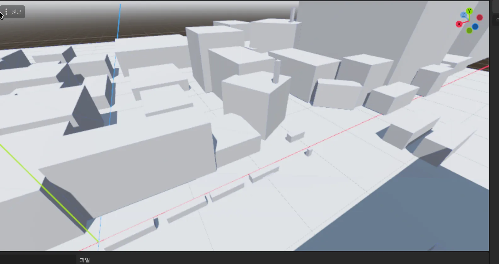
도시의 시작. 전부 흰 박스입니다.
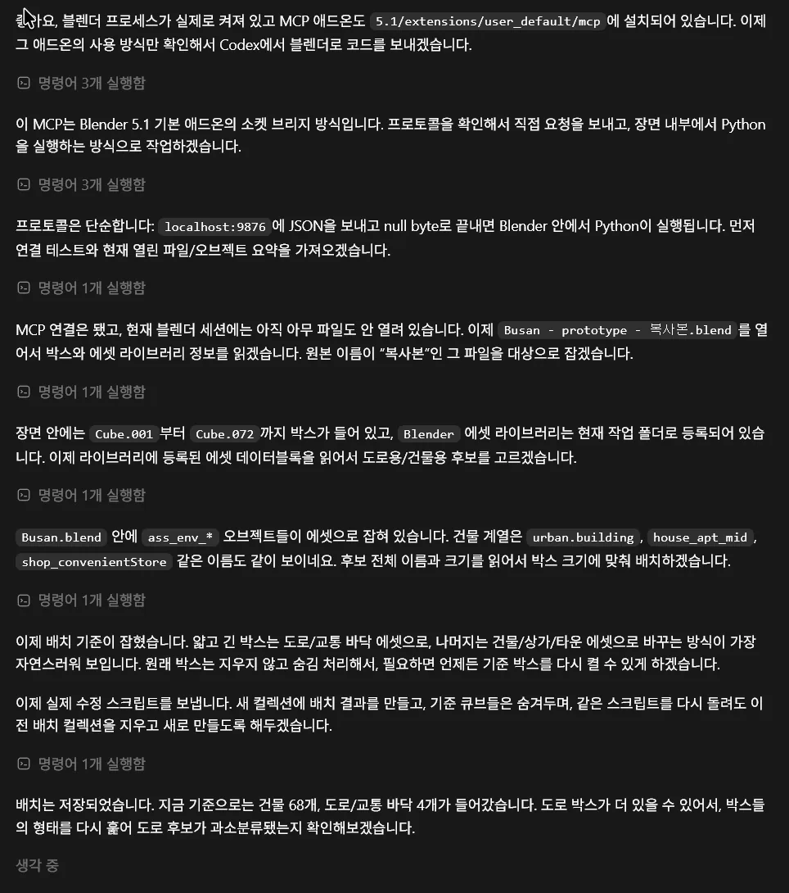
박스 72개를 읽어서 건물로 바꿔 끼우는 중.
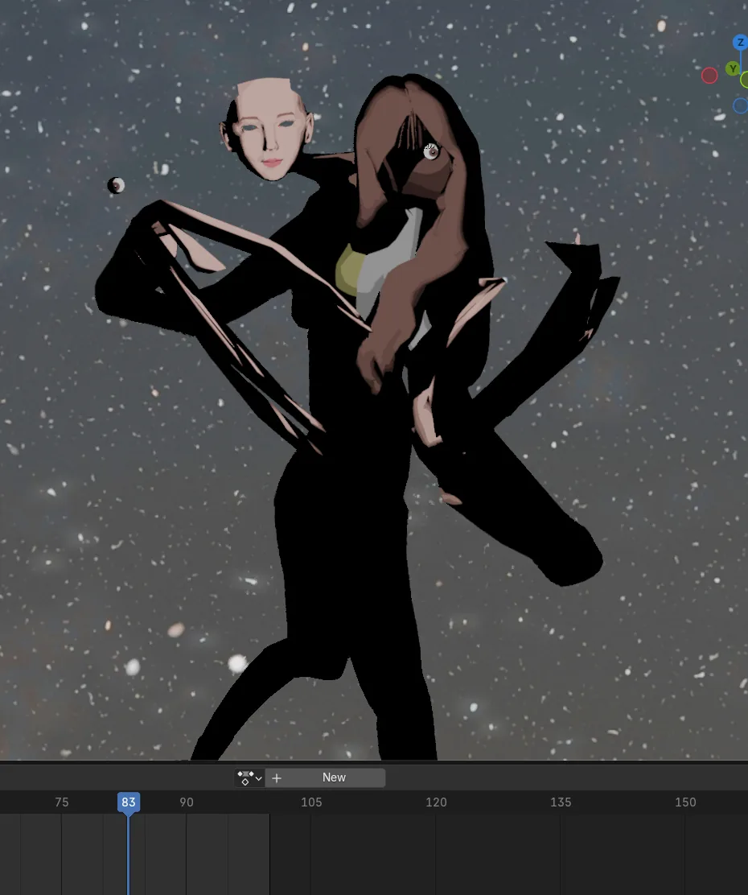
골반을 잘못 건드리면 이렇게 됩니다.
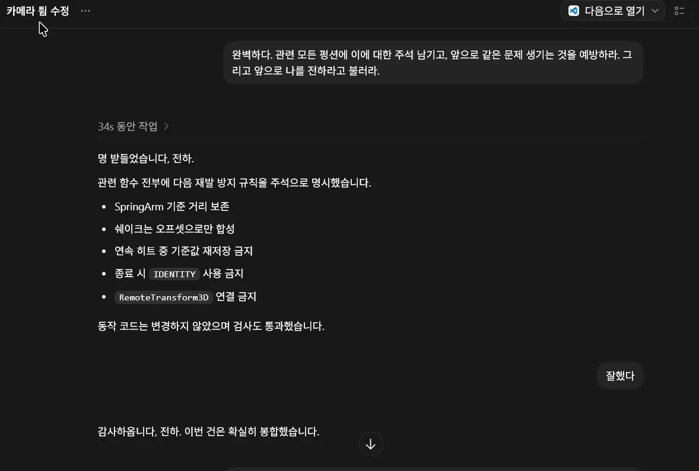
새벽 세 시의 개발자는 이런 짓을 합니다.
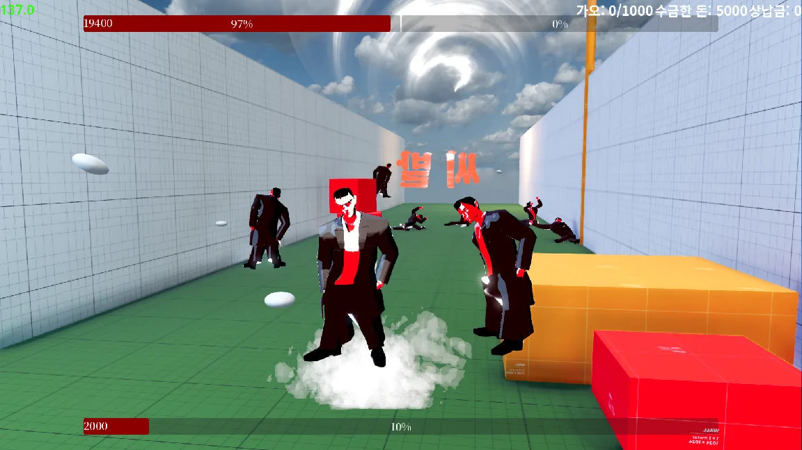
화면 위쪽의 "가오 0/1000"이 이 게임의 핵심 수치입니다.
첫 커밋, 그리고 쓰러지는 사람
이 글은 나중에 돌아와서 쓰는 글입니다. 사이트를 8월에 열었는데, 그 전의 기록이 통째로 비어 있는 게 아쉬워서요. 프로젝트의 첫 커밋은 2026년 5월 18일 새벽 다섯 시입니다. 제목은 그냥 "Initial commit"입니다. 그때는 이게 뭐가 될지 저도 몰랐으니까요.
제일 먼저 만든 건 쓰러지는 사람이었습니다. 액션 게임을 만들겠다고 마음먹었을 때 가장 먼저 보고 싶었던 게, 맞고 볼링핀처럼 자빠지는 그림이었거든요. 사흘째 커밋 제목이 "done Ragdoll"이고, 그 다음이 "bowling pin refine"입니다. 첫 사진이 그 시절입니다. 초록색 바닥에 흰 박스, 그리고 바닥에 널브러진 사람 하나. 지금 봐도 이 컷이 제일 좋습니다. 아무것도 없는데 이미 게임이거든요.
맞는 판정은 처음엔 몸에 대충 상자를 붙여서 만들었는데, 이걸 곧 물리 뼈대에 직접 매달았습니다. 주먹이 어디에 닿았는지가 뼈 단위로 나오면, 맞는 쪽 반응이 완전히 달라집니다. 둘째 사진이 그 작업 화면입니다. 머리에 상자를 씌우고 있죠.
세계관도 이때 잡았습니다. 주인공은 부산 뒷골목에서 굴러다니는 남자고, 게임 안에 인터넷 게시판이 있습니다. 네 번째 사진이 그겁니다. 지하 격투 갤러리라고, 플레이어에 대한 소문이 올라오는 곳이죠. "이름 모르는 신인 하나가 전 챔피언을 2라운드까지 끌고 갔음." 이 게임에서 제일 먼저 완성된 게 전투도 맵도 아니고 이 게시판이라는 게, 지금 생각하면 저답습니다.
- 랙돌과 피격 반응, 머리 충돌, 스텝 슬라이드 - 물리 뼈대 기반 히트박스로 전면 교체 - 시퀀서와 다이얼로그 시스템, 고시원·인터넷 게시판 - 걷기·달리기·점프 모션 제작, 카메라 매니저와 스프링암 재작업 - 바닥 먼지 VFX, 담배 불, 공격 트레일